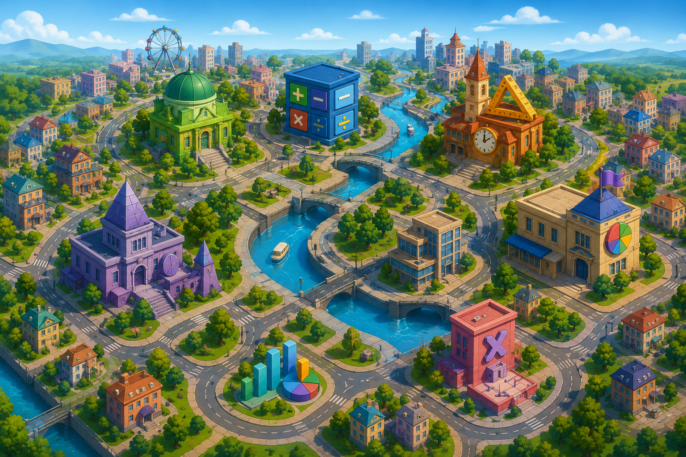

WITAJ W MIEŚCIE MATEMATYKI!
To miasto pełne wiedzy i przygód.
Wsiadaj do metra i odkrywaj kolejne dzielnice!

Dzisiaj kontynuujemy naszą podróż w dzielnicy UŁAMKÓW.
Twoja kolejna stacja: UŁAMKI DZIESIĘTNE
Miasto Matematyki